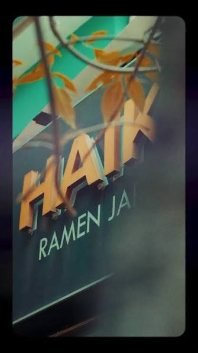

Sobre Nosotros

Historia del Restaurante
Haiku Ramen es un restaurante especializado en gastronomía japonesa ubicado en la ciudad de La Paz, Bolivia, en la avenida 20 de Octubre, esquina Pinilla, en la zona de Sopocachi. El restaurante nació con la propuesta de acercar la auténtica experiencia del ramen japonés al público boliviano, apostando por recetas inspiradas en la tradición japonesa y elaboradas con ingredientes cuidadosamente seleccionados. Desde su apertura en 2021, Haiku Ramen se ha convertido en uno de los referentes de la comida japonesa en La Paz, destacándose por su dedicación a la preparación artesanal de caldos, fideos y acompañamientos.
El nombre "Haiku" hace referencia a la famosa forma de poesía japonesa caracterizada por su sencillez y profundidad, una filosofía que también se refleja en la cocina del restaurante. Su propuesta gastronómica busca resaltar la esencia de cada ingrediente mediante procesos de preparación que requieren tiempo, paciencia y técnica. Entre sus especialidades se encuentran diferentes variedades de ramen, gyozas, yakisoba y opciones vegetarianas y veganas, lo que ha permitido atraer tanto a amantes de la cultura japonesa como a nuevos comensales interesados en descubrir sabores diferentes.
Con el paso de los años, Haiku Ramen ha fortalecido su identidad bajo el lema "La Casa del Ramen", consolidándose como un espacio donde la gastronomía, la cultura japonesa y la experiencia culinaria se unen. Gracias a la calidad de sus platos, su ambiente temático y la constante innovación de su menú, el restaurante ha logrado ganarse un lugar importante dentro de la oferta gastronómica paceña, convirtiéndose en un punto de encuentro para quienes buscan disfrutar de una experiencia auténtica inspirada en Japón sin salir de Bolivia.